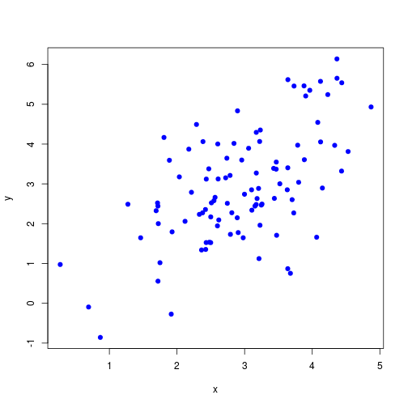
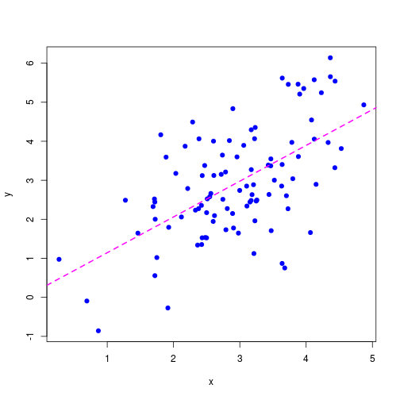
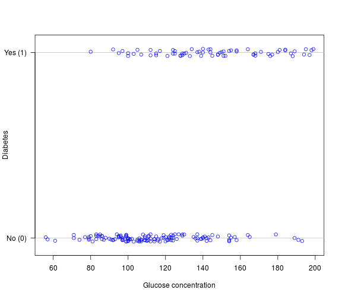
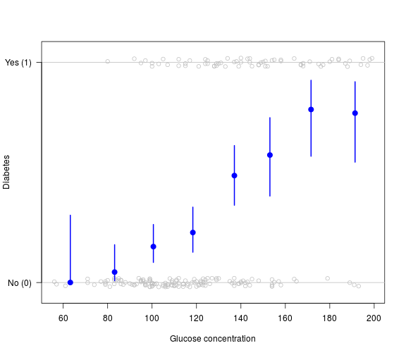
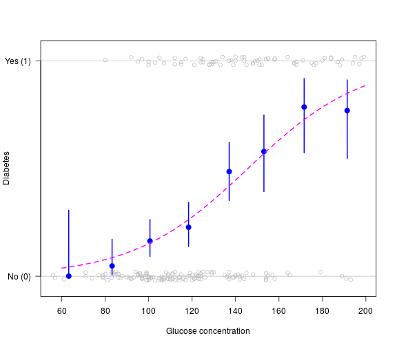
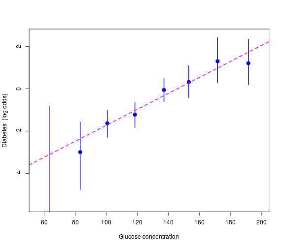
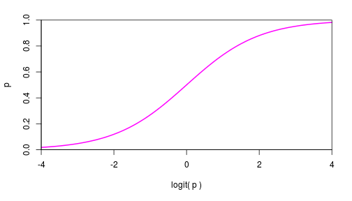
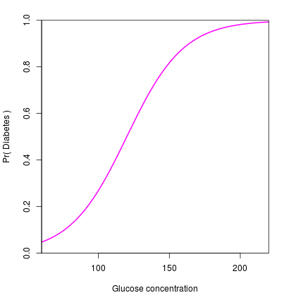
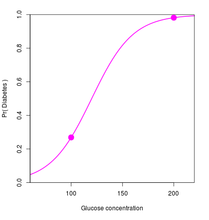

Logistic regression
11 Oct 2016
Damjan Vukcevic
University of Melbourne
Linear regression
Linear regression

Binary outcome variable

Binary outcome variable

Binary outcome variable

Binary outcome variable

Logit transformation
Transform outcome probabilities onto the log odds scale: \[\mathrm{logit}(p) = \log\left(\frac{p}{1-p}\right)\]

Such a transformation is called a link function
Logistic regression
\(Y_i\) is binary outcome variable (taking values 0 or 1)
\(X_i\) is a predictor variable
Logistic regression model: \[p_i = \Pr(Y_i = 1 \mid X_i)\] \[\mathrm{logit}(p_i) = \log\left(\frac{p}{1-p}\right) = \mu + \beta X_i\]
\(Y_i\) are independent, conditional on \(X_i\)
Logistic regression
\(Y_i\) is binary outcome variable (taking values 0 or 1)
\(X_i\) is a predictor variable
Logistic regression model: \[p_i = \Pr(Y_i = 1 \mid X_i)\] \[\mathrm{logit}(p_i) = \log\left(\frac{p}{1-p}\right) = \mu + \beta X_i\]
\(Y_i\) are independent, conditional on \(X_i\)
Note:
- \(\mathrm{logit()}\) ensures all predictions give valid probabilities,
by 'linking' the outcome scale (\(p_i\)) with the modelling scale (\(\mu + \beta X_i\))
Example

Let \(\mu = -6\) and \(\beta = 0.05\), \[\mathrm{logit}(p_i) = -6 + 0.05 \, X_i\]
Example
Let \(\mu = -6\) and \(\beta = 0.05\), \[\mathrm{logit}(p_i) = -6 + 0.05 \, X_i\]
Re-arrange, \[p_i = \frac{e^{-6 + 0.05 X_i}}{1 + e^{-6 + 0.05 X_i}}\]
Example

Let \(\mu = -6\) and \(\beta = 0.05\), \[\mathrm{logit}(p_i) = -6 + 0.05 \, X_i\]
Re-arrange, \[p_i = \frac{e^{-6 + 0.05 X_i}}{1 + e^{-6 + 0.05 X_i}}\]
Plug in some values: \[X_i = 100 \quad \mapsto \quad p_i = 0.27\] \[X_i = 200 \quad \mapsto \quad p_i = 0.98\]
Parameter interpretation
Re-write the model: \[\begin{aligned} \mathrm{logit}(p_i) &= \mu + \beta X_i \\ \Rightarrow \quad \frac{p_i}{1 - p_i} &= e^{\mu + \beta X_i} \end{aligned}\]
Parameter interpretation
Re-write the model: \[\begin{aligned} \mathrm{logit}(p_i) &= \mu + \beta X_i \\ \Rightarrow \quad \frac{p_i}{1 - p_i} &= e^{\mu + \beta X_i} \end{aligned}\]
Consider binary \(X_i \in \{0, 1\}\) \[X_i = 0 \quad \Rightarrow \quad \frac{p_i}{1 - p_i} = e^{\mu} \phantom{e^{\beta}}\] \[X_i = 1 \quad \Rightarrow \quad \frac{p_i}{1 - p_i} = e^{\mu} e^{\beta}\]
Parameter interpretation
Re-write the model: \[\begin{aligned} \mathrm{logit}(p_i) &= \mu + \beta X_i \\ \Rightarrow \quad \frac{p_i}{1 - p_i} &= e^{\mu + \beta X_i} \end{aligned}\]
Consider binary \(X_i \in \{0, 1\}\) \[X_i = 0 \quad \Rightarrow \quad \frac{p_i}{1 - p_i} = e^{\mu} \phantom{e^{\beta}}\] \[X_i = 1 \quad \Rightarrow \quad \frac{p_i}{1 - p_i} = e^{\mu} e^{\beta}\]
\(e^{\mu}\) is the baseline odds
\(e^{\beta}\) is the odds ratio (OR), and \(\beta\) is the log odds ratio
Comparison to linear regression
Logistic regression: \[\mathrm{logit}\left(\Pr\left(Y_i = 1\right)\right) = \mu + \beta X_i\]
Linear regression: \[Y_i = \mu + \beta X_i + \epsilon_i\] \[\epsilon_i \sim \mathrm{N}(0, \sigma^2)\]
Differences:
- No error term
- No variance parameter
Likelihood function
The likelihood is the probability of the observed outcome variables: \[L(\mu, \beta) = \prod_i \Pr(Y_i = y_i \mid X_i = x_i)\]
Likelihood function
The likelihood is the probability of the observed outcome variables: \[L(\mu, \beta) = \prod_i \Pr(Y_i = y_i \mid X_i = x_i)\]
In this case, Bernoulli random variables: \[L(\mu, \beta) = \prod_i p_i^{y_i} (1 - p_i)^{1 - y_i}\]
Likelihood function
The likelihood is the probability of the observed outcome variables: \[L(\mu, \beta) = \prod_i \Pr(Y_i = y_i \mid X_i = x_i)\]
In this case, Bernoulli random variables: \[L(\mu, \beta) = \prod_i p_i^{y_i} (1 - p_i)^{1 - y_i}\]
The parameters are hidden inside the \(p_i\) terms, \[p_i = \frac{e^{\mu + \beta x_i}}{1 + e^{\mu + \beta x_i}}\]
Likelihood function
The likelihood is the probability of the observed outcome variables: \[L(\mu, \beta) = \prod_i \Pr(Y_i = y_i \mid X_i = x_i)\]
In this case, Bernoulli random variables: \[L(\mu, \beta) = \prod_i p_i^{y_i} (1 - p_i)^{1 - y_i}\]
The parameters are hidden inside the \(p_i\) terms, \[p_i = \frac{e^{\mu + \beta x_i}}{1 + e^{\mu + \beta x_i}}\]
Maximise the likelihood using the iteratively reweighted least squares (IRLS) method. Estimation and testing then follow the same as for linear regression...
Estimation
Parameter estimates from maximum likelihood
Standard error from the Fisher information matrix
Example: \[\begin{aligned} \hat\mu &= -5.5 &(\textrm{s.e. }\: 0.84) \\ \hat\beta &= 0.038 &(\textrm{s.e. }\: 0.0063) \end{aligned}\]
Easier to interpret as an odds ratio: \[\textrm{OR} = e^{\hat\beta} = 1.04\]
Can also calculate a confidence interval for the OR: \[\textrm{95% CI} \approx e^{\hat\beta \pm 2 \mathrm{se}(\hat\beta)} = (1.03, 1.05)\]
Standard likelihood theory: estimates are asymptotically unbiased, efficient and normally distributed
Hypothesis testing
Usually interested in tests of effect parameters, for example: \[\begin{cases} H_0\colon \: \beta = 0 \\ H_1\colon \: \beta \ne 0 \end{cases}\]
Use a likelihood ratio test to carry this out:
- Fit both models
- Compare \(-2 \log(\textrm{likelihood ratio})\) against a \(\chi^2\) distribution
- Usually, just summarise the outcome by a p-value
Hypothesis testing
Usually interested in tests of effect parameters, for example: \[\begin{cases} H_0\colon \: \beta = 0 \\ H_1\colon \: \beta \ne 0 \end{cases}\]
Use a likelihood ratio test to carry this out:
- Fit both models
- Compare \(-2 \log(\textrm{likelihood ratio})\) against a \(\chi^2\) distribution
- Usually, just summarise the outcome by a p-value
Example: \[\textrm{p-value} = 2.5 \times 10^{-12}\]
Building up more complex models
Can add more predictor variables, the same as for linear regression:
- Continuous \(x\)
- Discrete \(x\)
- Non-linear transformations (\(x^2\), \(\sin(x)\), etc.)
- Interaction terms
For example: \[\mathrm{logit}(p_i) = \mu + \beta_1 X_i + \beta_2 X_i^2 + \gamma_j \mathrm{I}(Z_i = j)\]
Case-control studies and logistic regression
Case-control studies: only ORs are estimable
Logistic regression: estimates ORs
A perfect match!
Case-control studies and logistic regression
Case-control studies: only ORs are estimable
Logistic regression: estimates ORs
A perfect match!
Example: genome-wide association studies (GWAS)
GWAS example, single SNP analysis
Consider a disease study with 1000 cases and 1000 controls
For individual \(i\):
- \(Y_i\) is the case-control status
- \(G_i\) is the genotype of a given SNP
GWAS example, single SNP analysis
Consider a disease study with 1000 cases and 1000 controls
For individual \(i\):
- \(Y_i\) is the case-control status
- \(G_i\) is the genotype of a given SNP
Example data:
| \(G = 0\) | \(G = 1\) | \(G = 2\) | |
|---|---|---|---|
| \(Y = 0\) (controls) | 360 | 468 | 172 |
| \(Y = 1\) (cases) | 301 | 486 | 213 |
Models for single-SNP association
Additive model
\[\mathrm{logit}(p_i) = \mu + \beta G_i\]
\(G_i\) is numeric
Each copy of the SNP allele increases the odds of disease by \(e^{\beta}\)
This model underlies the vast majority of analyses
Models for single-SNP association
Additive model
\[\mathrm{logit}(p_i) = \mu + \beta G_i\]
\(G_i\) is numeric
Each copy of the SNP allele increases the odds of disease by \(e^{\beta}\)
This model underlies the vast majority of analyses
General model
\[\mathrm{logit}(p_i) = \mu + \beta_1 \mathrm{I}(G_i = 1) +
\beta_2 \mathrm{I}(G_i = 2)\]
\(G_i\) is categorical
The heterozygote OR is \(e^{\beta_1}\) and the homozygote OR is \(e^{\beta_2}\)
Inference with the additive model

Parameter estimates: \[\begin{aligned} \hat\mu &= -0.17 &(\textrm{s.e. }\: 0.071) \\ \hat\beta &= 0.20 &(\textrm{s.e. }\: 0.063) \end{aligned}\]
\[\begin{aligned} \textrm{OR} &= e^{\hat\beta} = 1.22 \\ \textrm{95% CI} &\approx (1.08, 1.38) \end{aligned}\]
Association test: \[\begin{cases} H_0\colon \: \beta = 0 \\ H_1\colon \: \beta \ne 0 \end{cases}\]
\[\textrm{p-value} = 0.0017\]
NOT 'genome-wide significant'
Extensions
Can easily add covariates:
\[\mathrm{logit}(p_i) = \mu + \beta X_i + \mathbf{\gamma Z} \]
For example: sex, ethnicity, principal components,...
Inference and testing follows similarly
Extensions
Can easily add covariates:
\[\mathrm{logit}(p_i) = \mu + \beta X_i + \mathbf{\gamma Z} \]
For example: sex, ethnicity, principal components,...
Inference and testing follows similarly
Related models
- Multinomial logistic regression
- Ordinal logistic regression
- Poisson regression ('log-linear model')